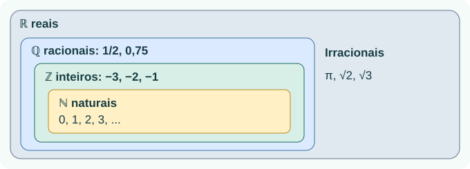
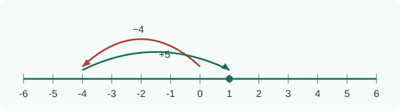
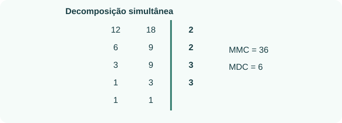

Preparação para o Vestibulinho ETEC · Módulo 01. Estude os conceitos, acompanhe os exemplos linha por linha e faça a fixação antes de passar ao próximo tópico.
Naturais ℕ são os números de contagem (incluindo zero nesta aula). Inteiros ℤ incluem os negativos. Racionais ℚ são escritos como divisão de inteiros com denominador não nulo; decimais finitos e dízimas periódicas são racionais. Irracionais têm expansão decimal infinita não periódica. Reais ℝ incluem todos os racionais e irracionais.
ℕ ⊂ ℤ ⊂ ℚ ⊂ ℝ

Os naturais estão dentro dos inteiros, que estão dentro dos racionais; irracionais ficam fora de ℚ.
Exemplo resolvido
Classifique −4, 0,5, √49 e √2 no menor conjunto possível.
−4 é negativo e inteiro, portanto ℤ.
0,5 = 12, portanto ℚ.
√49 = 7, portanto ℕ.
√2 não é razão entre inteiros: irracional.
Cuidado: Nem toda raiz é irracional: √36 = 6.
Exercício de fixação
Fixação 01 · autoral
Classifique −7, 0,75, √81 e π.
Confira também o desenvolvimento no gabarito; respostas em formatos equivalentes podem exigir conferência manual.
Adição desloca na reta numérica. Para somar números de sinais diferentes, subtraia os módulos e mantenha o sinal do maior módulo. Na subtração, some o oposto. Multiplicação e divisão: sinais iguais dão positivo; diferentes dão negativo.
a − (−b) = a + b

Reta numérica: −4 + 5 = 1. Deslocamento para a esquerda e depois para a direita.
Exemplo resolvido
Calcule −12 + 7 − (−3) e (−6) × (−4).
−12 + 7 = −5.
−5 − (−3) = −5 + 3 = −2.
(−6) × (−4) = +24.
Cuidado: A regra de sinais da multiplicação não serve para a soma: −6 + (−4) = −10.
Exercício de fixação
Fixação 02 · autoral
Calcule −15 + 9 − (−8) e (−36) ÷ 4.
Confira também o desenvolvimento no gabarito; respostas em formatos equivalentes podem exigir conferência manual.
Resolva agrupamentos de dentro para fora. Em seguida, potências e raízes; multiplicações e divisões na ordem em que aparecem; por fim, adições e subtrações da esquerda para a direita.
( ) → potências/raízes → ×/÷ → +/−
Exemplo resolvido
Resolva 20 − 2 × (3 + 4) + 2².
20 − 2 × 7 + 2²
20 − 2 × 7 + 4
20 − 14 + 4
6 + 4 = 10.
Cuidado: Não faça 20 − 2 antes da multiplicação.
Exercício de fixação
Fixação 03 · autoral
Resolva 30 − 4 × (2 + 3) + √81.
Confira também o desenvolvimento no gabarito; respostas em formatos equivalentes podem exigir conferência manual.
Múltiplos são resultados de multiplicações; divisores dividem sem resto. O MMC é o menor múltiplo comum positivo e serve para sincronizar períodos ou somar frações. O MDC é o maior divisor comum e serve para formar grupos iguais máximos.
MMC(12,18) = 2² × 3²; MDC(12,18) = 2 × 3

Decomposição de 12 e 18: MMC usa todos os fatores; MDC usa os comuns.
Exemplo resolvido
Encontre o MMC e o MDC de 12 e 18.
12 = 2² × 3
18 = 2 × 3²
MMC: escolha todos os fatores com o maior expoente: 4 × 9 = 36.
MDC: escolha os fatores comuns com o menor expoente: 2 × 3 = 6.
Cuidado: MMC e MDC não são a mesma operação.
Exercício de fixação
Fixação 04 · autoral
Duas luzes piscam a cada 8 e 12 segundos. Em quanto tempo piscarão juntas novamente?
Confira também o desenvolvimento no gabarito; respostas em formatos equivalentes podem exigir conferência manual.
O denominador indica em quantas partes iguais o todo foi dividido; o numerador indica quantas foram tomadas. Multiplicar ou dividir ambos pelo mesmo número não nulo mantém o valor. Para simplificar, use um divisor comum.
ab = a × kb × k (b ≠ 0, k ≠ 0)
Oito partes iguais, três preenchidas: 3/8.
Exemplo resolvido
Simplifique 18/24 e calcule 3/8 de 80.
1824 = 18 ÷ 624 ÷ 6 = 34.
80 ÷ 8 = 10 por parte.
10 × 3 = 30.
Cuidado: Nunca simplifique apenas o numerador.
Exercício de fixação
Fixação 05 · autoral
Simplifique 21/35 e calcule 2/5 de 90.
Confira também o desenvolvimento no gabarito; respostas em formatos equivalentes podem exigir conferência manual.
Denominadores iguais: opere apenas os numeradores. Denominadores diferentes: encontre o MMC, reescreva cada fração equivalente e só então some ou subtraia.
ab + cd = ad + bcbd
Reescrevemos 2/3 e 1/4 em doze partes iguais antes de somar.
Exemplo resolvido
Calcule 2/3 + 1/4.
MMC(3,4) = 12.
12 ÷ 3 × 2 = 8.
12 ÷ 4 × 1 = 3.
812 + 312 = 1112.
Cuidado: Não some denominadores.
Exercício de fixação
Fixação 06 · autoral
Calcule 5/6 − 1/4.
Confira também o desenvolvimento no gabarito; respostas em formatos equivalentes podem exigir conferência manual.
Multiplique numerador por numerador e denominador por denominador. Para dividir, mantenha a primeira fração e multiplique pelo inverso da segunda. Em frações complexas, resolva numerador e denominador separadamente.
ab ÷ cd = ab × dc
Exemplo resolvido
Calcule (2 − 1/2 × 3) ÷ 5.
12 × 3 = 32.
2 − 32 = 4 − 32 = 12.
12 ÷ 5 = 12 × 15 = 110.
Cuidado: Inverta somente o divisor.
Exercício de fixação
Fixação 07 · autoral
Calcule (1 + 3/4) ÷ (1/2).
Confira também o desenvolvimento no gabarito; respostas em formatos equivalentes podem exigir conferência manual.
A vírgula separa unidades de décimos, centésimos etc. Na soma e subtração alinhe as vírgulas. Na multiplicação conte as casas decimais dos fatores. Na divisão multiplique dividendo e divisor pela mesma potência de dez até o divisor virar inteiro.
0,75 = 75100 = 34
Exemplo resolvido
Calcule 1,25 + 0,5; 1,5 × 0,2 e 4,5 ÷ 0,5.
1,25 + 0,50 = 1,75.
15 × 2 = 30
duas casas decimais → 0,30.
4,5 ÷ 0,5 = 45 ÷ 5 = 9.
Cuidado: Não alinhe os números pelo último algarismo na adição.
Exercício de fixação
Fixação 08 · autoral
Calcule 2,4 × 0,3 e 6,3 ÷ 0,7.
Confira também o desenvolvimento no gabarito; respostas em formatos equivalentes podem exigir conferência manual.
A base é o número repetido e o expoente conta os fatores quando é inteiro positivo. Na multiplicação de mesma base, some expoentes; na divisão, subtraia; potência de potência, multiplique. Base não nula elevada a zero vale 1. Expoente negativo inverte a base.
aᵐ × aⁿ = aᵐ⁺ⁿ; aᵐ ÷ aⁿ = aᵐ⁻ⁿ; a⁻ⁿ = 1aⁿ
Exemplo resolvido
Calcule 2³ × 2⁴ e 2⁻³. Compare (−3)² e −3².
2³ × 2⁴ = 2⁷ = 128.
2⁻³ = 1/2³ = 1/8.
(−3)² = (−3) × (−3) = 9.
−3² = −(3²) = −9.
Cuidado: Não some expoentes de bases diferentes.
Exercício de fixação
Fixação 09 · autoral
Calcule (3²)² ÷ 3³ e 5⁻².
Confira também o desenvolvimento no gabarito; respostas em formatos equivalentes podem exigir conferência manual.
A raiz quadrada principal de um número não negativo é o número não negativo cujo quadrado é o radicando. Raiz cúbica pode ser negativa. Para simplificar, extraia fatores quadrados perfeitos.
√(a × b) = √a × √b (a,b ≥ 0)
Exemplo resolvido
Simplifique √72 e calcule ∛(−27).
72 = 36 × 2.
√72 = √36 × √2 = 6√2.
(−3)³ = −27
logo ∛(−27) = −3.
Cuidado: √49 = 7, mas x² = 49 tem soluções ±7.
Exercício de fixação
Fixação 10 · autoral
Simplifique √98 e calcule ∛64.
Confira também o desenvolvimento no gabarito; respostas em formatos equivalentes podem exigir conferência manual.
Escrevemos números muito grandes ou pequenos como a × 10ⁿ, com 1 ≤ a < 10 (para números positivos). Deslocar a vírgula à esquerda para normalizar um número grande gera expoente positivo; à direita para um número pequeno gera negativo.
N = a × 10ⁿ
Exemplo resolvido
Converta 0,000050 e 6.500.000 para notação científica.
0,000050 = 5,0 × 10⁻⁵ (cinco casas).
6.500.000 = 6,5 × 10⁶ (seis casas).
Cuidado: O coeficiente deve estar entre 1 e 10, sem incluir 10.
Exercício de fixação
Fixação 11 · autoral
Escreva 0,0032 e 120.000 em notação científica.
Confira também o desenvolvimento no gabarito; respostas em formatos equivalentes podem exigir conferência manual.
🔽 Ver gabarito comentado
Resposta: 3,2 × 10⁻³ e 1,2 × 10⁵
0,0032 → 3,2: três casas.
120.000 → 1,2: cinco casas.
Continue praticando
REVISÃO
Resolva as questões reais e complementares do módulo e confira cada etapa da resolução.